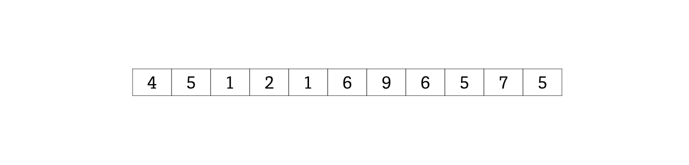
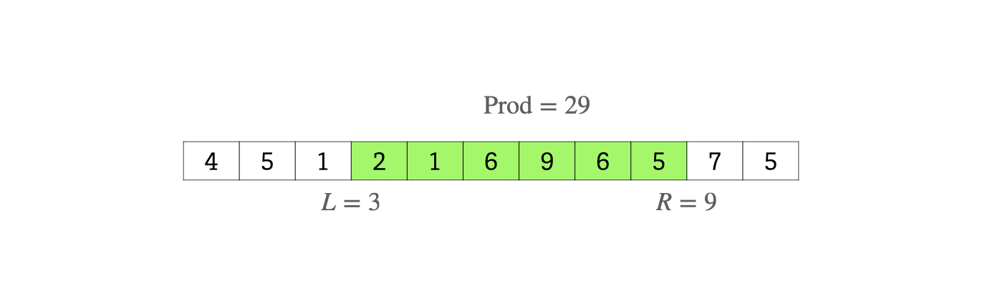
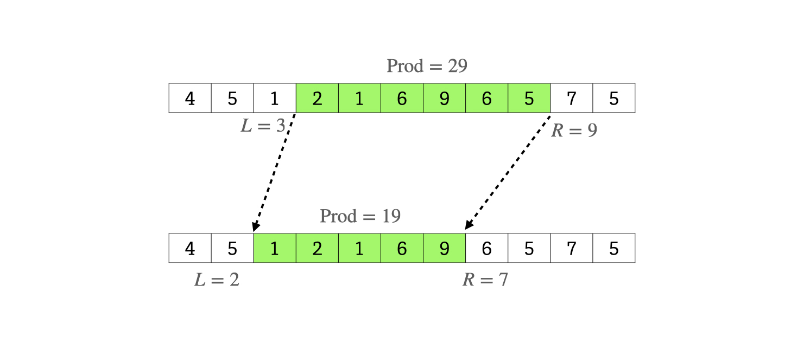
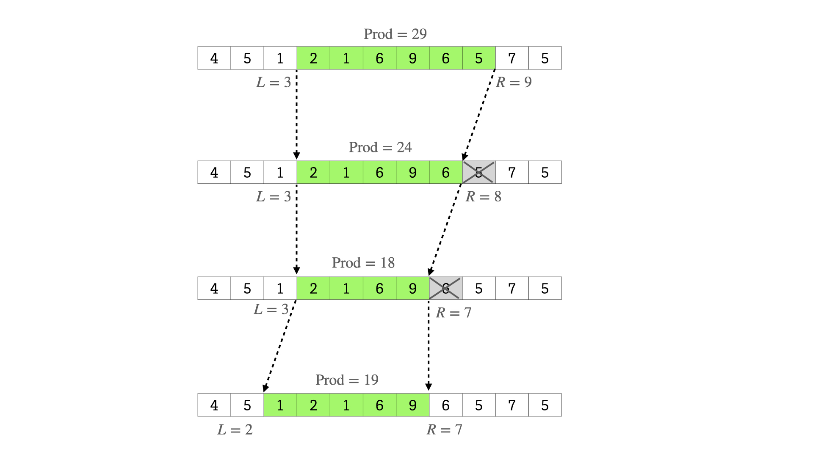
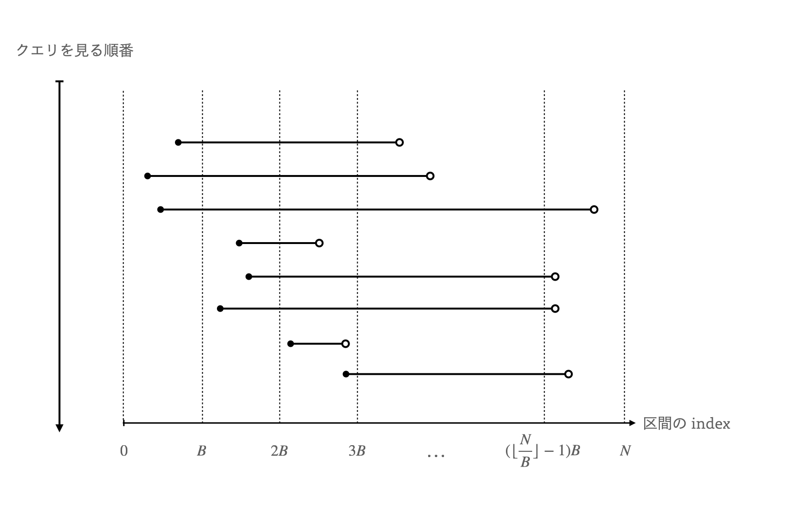
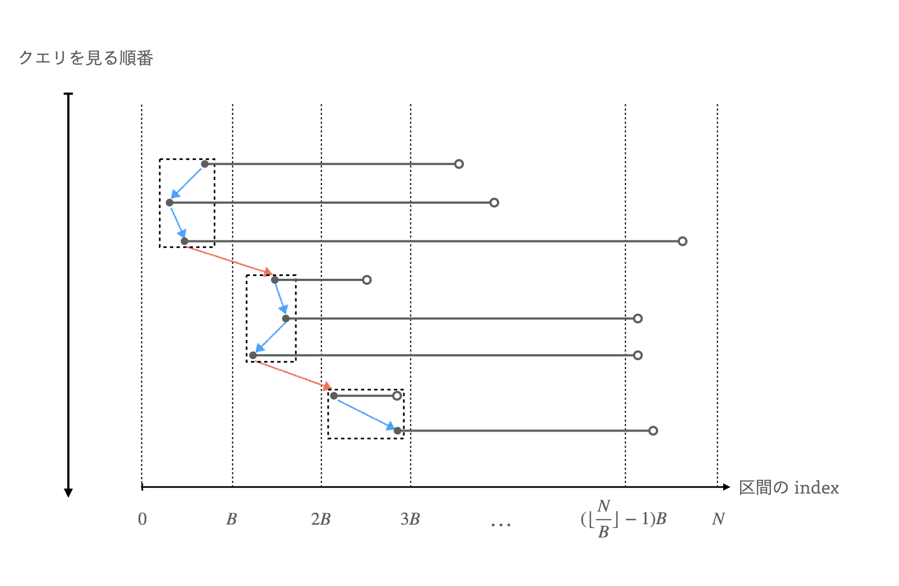
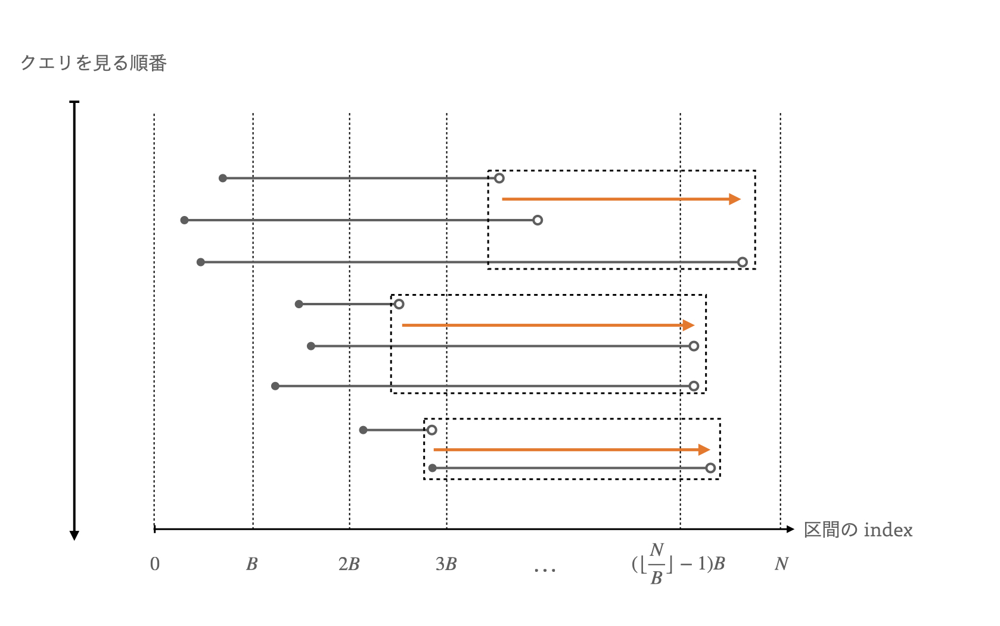
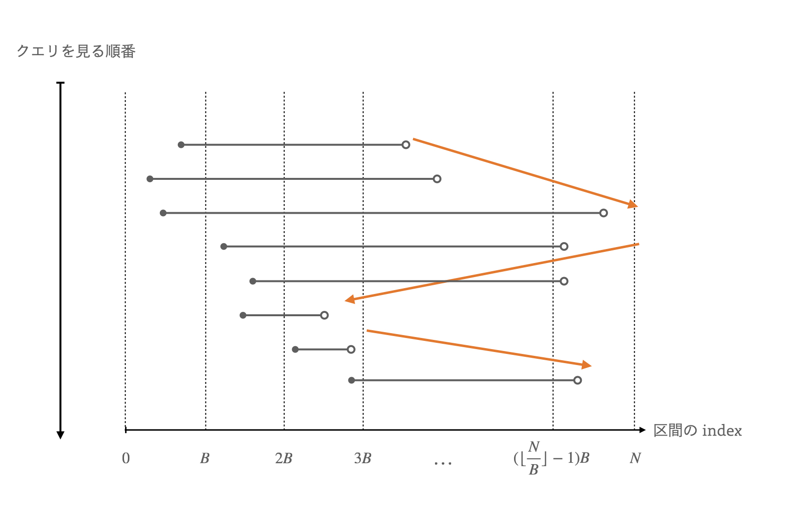

以下の抽象的な問題を解きます。
長さ \(N\) の列 \(A\) と、\(Q\) 個の半開区間の組 \([L_1,R_1),[L_2,R_2),\)\([L_3,R_3),\dots ,[L_Q,R_Q)\) がある。各 \(1 \leq i\leq Q\) に対して、列 \(A\) の半開区間 \([L_i,R_i)\) の何らかの集約 \(\mathrm{Prod}\) を計算せよ。
\(\mathrm{Prod}\) が小さいデータ型として結合できる構造 (総和や最小値など) ならセグ木に乗せるだけなのですが、種類数などの集約には登場した要素をメモする配列が必要なのでセグ木に乗りません。
シンプルに理解いただくため、今回は \(\mathrm{Prod}\) は要素の総和とします (本来はもっとややこしいデータであることが多い)。
例えば、以下の列における総和のクエリに答えることにします。

例えば、\([L_i,R_i) = [3,9)\) の場合、\(\mathrm{Prod} = 29\) です。

さて、次は \([L_i,R_i) = [2,7)\) の場合を考えることとします。ここで、今計算した区間 \([3,9)\) の両端を伸ばしたり縮めたりして \([3,9)\) から \([2,7)\) に遷移させます。

このとき、一気に遷移させるのではなく、両端を \(1\) つずつ伸縮させて次の区間に遷移させます。

また、区間を \(1\) だけ伸縮したとき、要素が 追加/削除 された後の \(\mathrm{Prod}\) の値を高速に求めることができる必要があります。例えば Mo's Algorithm を適用できる集約として以下の例があります。
追加/削除した要素を足し引きするだけなので \(O(1)\) 時間で \(\mathrm{Prod}\) を計算できる。
各要素が何回登場したかを配列で管理しておき、\(1\) 回以上登場する要素数を種類数としてカウントしておく。要素の 追加/削除 後はその要素の登場回数を変更して、\(1\) 回以上登場する要素数が変わったら種類数カウントを変更する。
列の要素を座標圧縮すると、登場回数の配列サイズが \(O(N)\) で、集約の更新時間が \(O(1)\) 時間です。配列のサイズは集約の更新に影響ないので、区間の伸縮を \(O(1)\) 時間で行うことができます。
Mo's Algorithm では、与えられた全ての区間に対して、区間の伸縮を行なって集約を計算します。
ある区間から別の区間の遷移には、区間の両端を \(O(N)\) だけ伸縮する必要があるので、愚直にこれを行うと計算量が \(O(NQ)\) になります。そこで、パラメータ \(B\) を決めて、区間を見る順番を \((\lfloor\frac{L_i}{B}\rfloor,R_i)\) の辞書順でソートして並べ替えます。

つまるところ、列 \(A\) を幅が \(B\) のブロック \(O(\frac{N}{B})\) 個に分割しています。このとき、各 \(L_i\) はいずれかのブロックに属します。
伸縮による区間の遷移の計算量を、区間の左端/右端について独立に分けて見てみましょう。以下は左端にのみ注目した場合を表した図です。

まずブロックの幅が \(B\) なので、左端が同じブロック内にある区間同士の場合、左端は区間の遷移 \(1\) 回あたり \(O(B)\) だけ移動します。これは上の図の青色で描かれた矢印に相当します。
また、左端が異なるブロック間を移動する場合は、プログラム全体を通して見ると左 ( index が 0 ) から右方向への一方通行なので、合計で \(O(N)\) しか移動しないことがわかります。
これらのことから、左端の移動距離は \(Q\) 個の区間全体で \(O(QB)\) です。
次は右端の移動について注目します。

区間のソートは \((\lfloor\frac{L_i}{B}\rfloor,R_i)\) の辞書順なので、左端が同じブロックに属している区間の右端は全て右方向に一方通行なので、これらの右端の移動距離は合計で \(O(N)\) です。これは上の図のオレンジの矢印に相当します。ブロックの個数が \(O(\frac{N}{B})\) 個なので、左端が同じブロックに所属する区間の右端の移動距離は全体で \(O(\frac{N^2}{B})\) です。
また、それ以外の移動は \(1\) 回あたり \(O(N)\) だけ移動しますが、そのような移動はブロックをまたぐ場合の \(O(\frac{N}{B})\) 回しか行われないため、ここも合計で \(O(\frac{N^2}{B})\) しか移動しません。
よって、両端の移動距離はプログラム全体で \(O(QB + \frac{N^2}{B})\) です。さて、この \(QB + \frac{N^2}{B}\) が小さくなるパラメータ \(B\) を決めたいのですが、これは相加相乗平均の式 \(QB + \frac{N^2}{B} \geq 2 \sqrt{(QB)\times (\frac{N^2}{B})}\) から、\(QB = \frac{N^2}{B}\) の場合、つまり \(B = \frac{N}{\sqrt{Q}}\) です。またこのとき、両端の移動距離は \(O(N\sqrt{Q})\) となります。
定数倍高速化区間のソートを \((\lfloor\frac{L_i}{B}\rfloor,R_i)\) の辞書順で行うのではなく、\((\lfloor\frac{L_i}{B}\rfloor,R_i\times (-1)^{\lfloor\frac{L_i}{B}\rfloor})\) の辞書順で行うことで、区間の右端がブロックを跨いで移動する場合の距離を減らすことが期待できます。

本記事では \(A\) 上を \(1\) 移動することを、距離 \(1\) の移動と捉えています。こうすることで、伸縮の回数を \(A\) 上の移動距離として表現できて書きやすいためです。